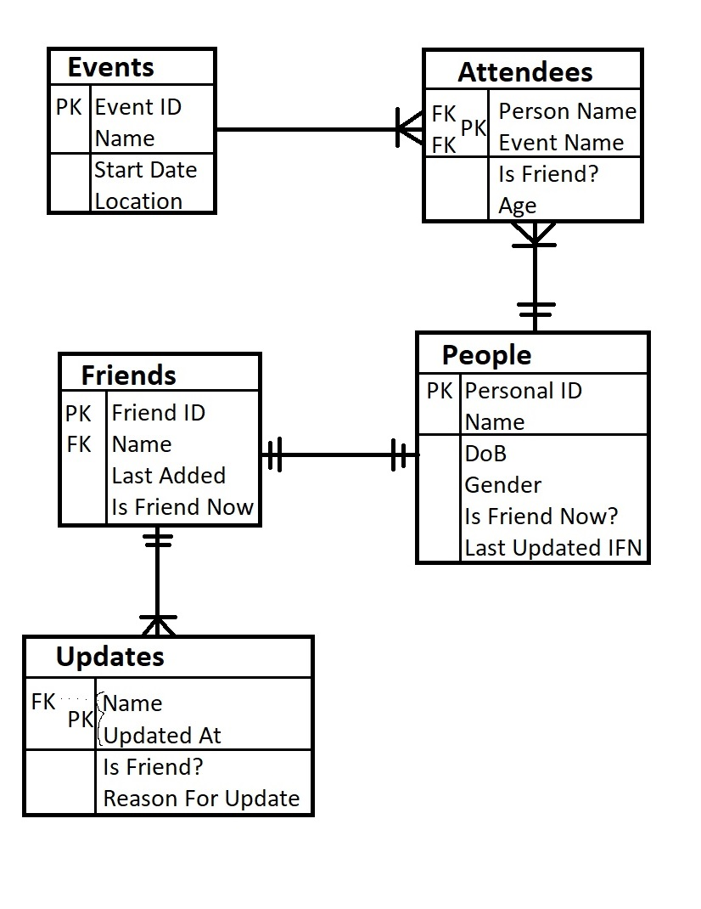
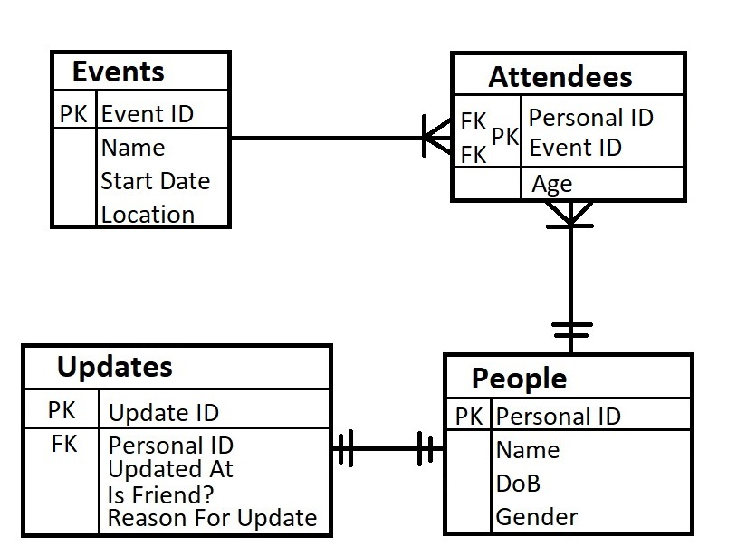
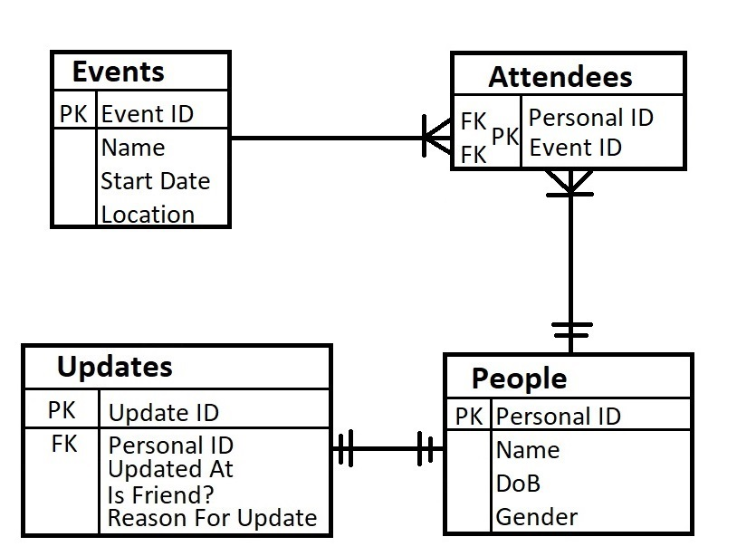
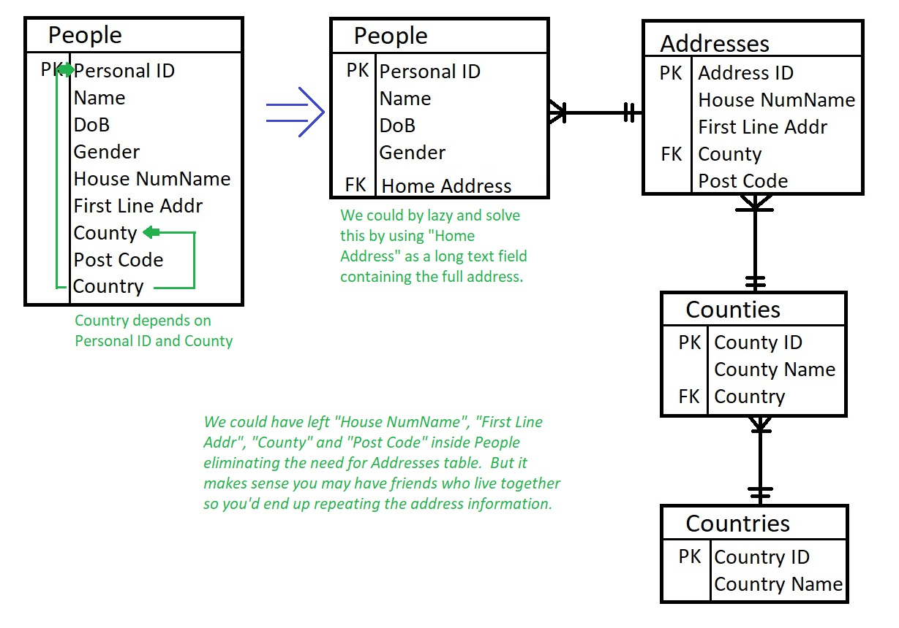

Normalisation
A process of organising data in the database. This is used to reduce duplication and improve data integrity. This process is one of iterative improvement illustrated below. We will continue to use the existing example and illustrate using Crow's Foot notation ERD.
First Normal Form (1NF)
- Depend on the row's order
- Mix data types in one attribute
- Have any attribute that is not atomic (single valued)
- Have tables without a Primary Key
- Repeat rows
I have mentioned that "Personal ID" are autogenerated numbers. Most DBMS will simply generate number from 1 and increase it by 1. Therefore row 1 will have ID 1 and row 2 will have ID 2. This does not mean we depend on the row's order. If we delete row 2 then "Personal ID" of 2 is deleted. Or if we changed the order of the rows so "Personal ID" of 1 was the last row. Then we don't have any issues because we depend on the "Personal ID", even if it is simply an increasing number.
Depends on the Key
- If it depended on the row's order then it does not depend on the key.
- If it has mixed data type in an attribute, then it's not going to be a valid column. If for example for PEOPLE we include "wealth" and sometimes we said the money they had as a value "10000.00" and othertimes as text "minted". Then the attribute may no longer be atomic but more importantly we can't have a column of (INT or VARCHAR) type.
- If we have non-atomic data like History then it's values don't depend on the key. The history of the friendship does depend Friend ID. So if we stored this simply as a text explanation of the history then it's okay. But instead we want to store multiple values in this column. Each value depends on the history of the friendship and so only indirectly on the key.
- If we have no Primary Key then we don't have a way to depend on it
- If we have repeated rows then we have data that does not depend on the key. For example we could have stored multiple entries for friends - one for each friend update. However again, the friend update information does not depend on Friend ID directly but on the history of friendship.

I've separated the candidate keys from the normal attributes. The following relationships therefore exist:
- Attendee is linked by Event and Person Name to, respectively EVENTS and PEOPLE table. We've decided that our unique primary key is a composite of these foreign keys. This is fairly common in associated entities. Some prefer to have an explicit "Attendees ID" instead to avoid composite keys.
- PEOPLE and FRIENDS both have their own unique primary key "Personal ID" and "Friend ID". They are however linked via a secondary key i.e. the person's name.
- FRIENDS are linked the UPDATES via the secondary key name. Whilst UPDATES primary key is a composite of Name and "Updated At". Again we could opt for an explicity "Update ID" instead.
The above looks all okay as we now "depend on the key". However it is worth stressing that this should also apply the relationships. In many cases we are relying upon the "Name" secondary key. However the KEY that matter is the Primary Key. Why don't we say "It depends on the primary key" ... You'll discover that at the end of normalisation! So we need to correct the example to ensure it depends on the PRIMARY KEY.
Now we will correct the key to always use the PRIMARY KEY.
Now we're no longer distracted by the secondary key. We can now see that we've forgot something, namely every attribute should depend on the key. So let us re-examine our attributes:
- EVENTS Name depends on Event ID
- EVENTS Start Date depends on Event ID
- EVENTS Location depends on Event ID
- ATTENDEES Is Friend? does NOT depend on Personal ID
- ATTENDEES Age depends on Personal ID
- PEOPLE Name depends on Personal ID
- PEOPLE DoB depends on Personal ID
- PEOPLE Gender depends on Personal ID
- PEOPLE Is Friend Now? does NOT depend on Personal ID
- PEOPLE Is Last IFN does NOT depend on Personal ID
- FRIENDS Personal ID depends on Friend ID
- FRIENDS Last Added depends on Friend ID
- FRIENDS Is Friend Now? depends on Friend ID
- UPDATES Friend ID depends on Update ID
- UPDATES Updated At depends on Update ID
- UPDATES Is Friend? depends on Update ID
- UPDATES Reason For Update depends on Update ID

Second Normal Form (2NF)
This is the second step in normalisation. You must ensure it is in 1NF first and that all attributes depend on the whole key.
Depends on the Whole Key
If your primary keys do not contain any composite keys they your 1NF tables is in 2NF. This step is to normalise any composite primary key so attributes depend on the whole key. Note composite keys may span two or more attributes but should be minimal, which means it will not include attributes unless they're needed to uniquely identify a row.

Third Normal Form (3NF)
This is the third step in normalisation. You must ensure it is in 2NF first and that all attributes depend on nothing but the key.
Depends on nothing but the key
We've looked at dependency on the key and whether it depends on the whole key. This aims to remove duplication where an attribute depends on a primary key but has an additional dependency that is not the primary key.

We can see that "Country" depends on both "Personal ID" (as it's their home country) and "County" (as each country has a set of counties). We could have lazyily stored the address as a single text field if we did not want to query it. For example we could have put a "description" attribute that includes the "dreamy blue eyes and totally bold head". If we don't want to search for it then that would work. But it makes sense we may want to search for all of our current friends in a specific country or county.
The Normalisation Oath
- Normalisation can go further including 6NF! Which is more normalisation that you think as not all Normal Forms are numbered. These deal with higher order concepts that you don't need for your exam. Also note that they don't fit in with the Normalisation Oath.
- Edgar F Codd was the person who invented the concept of normalisation.
The Key, the whole Key, and nothing but the Key, so help me Codd!The above mneumonic is not mine but it very handy to help you remember how to normalise to 3NF.